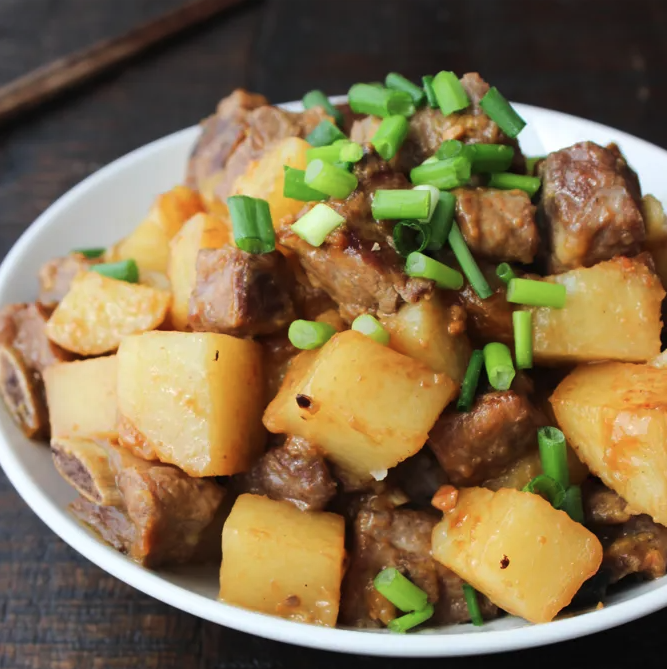

Home
Potato Pork Ribs

Description
This dish features tender pork ribs cooked with potatoes, seasoned with soy sauce and spices.
It is a popular dish in East Asian cultures.
Ingredients
- 1 kg pork ribs
- 500 g potatoes
- 2 tablespoons soy sauce
- 1 tablespoon sugar
- 1 tablespoon sesame oil
- 2 cloves garlic, minced
- 1 teaspoon ginger, minced
- 1 teaspoon black pepper
- 1 tablespoon vegetable oil
- 1 cup water
- 2 green onions, chopped
Instructions
- Heat vegetable oil in a large pot over medium heat.
- Add minced garlic and ginger, sauté until fragrant.
- Add pork ribs and cook until browned on all sides.
- Stir in soy sauce, sugar, sesame oil, and black pepper.
- Peel and cut potatoes into chunks, add to the pot.
- Pour in water, bring to a boil, then reduce heat to low.
- Cover and simmer for about 1 hour, or until the ribs are tender and potatoes are cooked through.
- Adjust seasoning with salt and pepper if needed.
- Garnish with chopped green onions before serving.
- Serve hot with steamed rice or as a main dish.